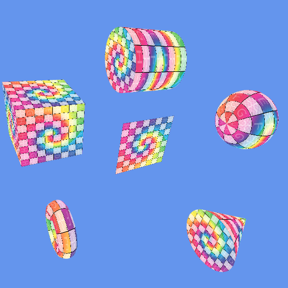

3D Graphics

This project is about generating 3D shapes using only C++ code and math, without any modeling software. I built a system that creates six shapes: Plane, Cube, Sphere, Torus, Cylinder, and Cone. These shapes are generated in real-time based on user-defined stacks and slices. The project also supports textured, wireframe, and normal-visualization modes, which can be easily changed using an ImGui interface.
build_index_buffer() to group two triangles into quads using a stride-based loop. This serves as the base structure for all shapes.create_plane_vertices() to generate a grid of vertices with correct UV coordinates and normals. The Cube reuses this function by combining six planes.convert_to_lines_pattern() to draw clean quad outlines from triangle pairs without drawing lines twice.Writing code to generate 3D shapes made me realize how important math is in 3D graphics. The torus was the most difficult part. To get the correct normals, I had to carefully calculate the vector from the ring's center to the surface. Also, making the top and bottom caps of the cylinder and cone required a lot of attention to the index ordering. Using real-time sliders was very helpful for testing. It was really satisfying to watch a rough sphere smoothly change into a perfectly round shape.